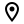

About Me
 New York, NY
I was born in Busan, Korea, but my family moved to the US when I was 3 years old. I lived in Guam and the Bay Area for a short time before settling in Atlanta, GA. I moved to NYC in 2016 to study Mechanical Engineering at New York University.
My Experience
Anish Kapoor Sculpture NYC - Dash 7 Design
The bean sculpture at 56 Leonard St is a 20 ft tall, 40 ton, stainless steel sculpture spearheaded by award winning artist Anish Kapoor. I’m a field and project engineer for the project. I optimize workflow processes by creating and managing working sheets that track inspection and structural improvement work. This increases workflow efficiency and decreases structural remediation time by 50%. I recently created BOMs and drawings for CNC manufacturing of load transfer props, which are expected to be fully fabricated before the new year, several weeks ahead of the project timeline.
WOOMBA
WOOMBA is a compact, remotely operated trash collection water vehicle (ROV). I was the lead design engineer for the ROV. I carried out research, development, and design of the ROV and optimized the framework and performed analyses to ensure that the ROV performed to its desired specifications. I designed the framework, mechanical components, and supplementary components in SolidWorks and used 3D printers to produce prototypes. A common issue with variable payload carrying vehicles is stability and weight. I optimized the design to decrease empty weight by 25% and experimented with layouts to increase stability with and without payload.
The Parking Lot Project
The Parking Lot Project is a cost-effective solution to lack of seating in high populated study spaces. I assisted in the research and development of cost-effective human occupancy detection. I led the development of housing units for ultrasonic range sensors, raspberry pi’s, and custom PCBs. Over a 3 month period of designing and 3D printing over 15 different prototypes, I noticed that a recurring issue was mass manufacturability using 3D printers in a shared printing space - flaws in parts, long printing times, and security of hardware. I perfected the design by modifying existing designs and creating new designs while applying design for additive manufacturing best practices. I decrease part footprint and decreased printing time of a batch (5 units) by 60%. Additionally, I devised a solution to prevent theft/tampering by implementing tamper-proof screws in the design. This minimized presence significantly and resulted in a tampering rate of 0%, a dramatic decrease from a tampering rate of 20%.
MakerBot Industries
I was a test engineering intern that performed material testing and developed testing graphs. This helped the company expedite testing and release of new 3D printing material by a considerable amount. I utilized a LabVIEW UI to control a testing apparatus that performs preliminary testing on 3D printing materials before they are tested in 3D printers. I developed a script in R to process multiple csv files and output material behavior graphs. The csv files contain data related to 3D printing parameters - extrusion force, extrusion speed, extrusion temperature, current, material length extruded. The material behavior graphs plot the relationship between extrusion force and extrusion temperature, which engineers on the testing team would use to set initial parameters for test printing. Access to these graphs prevented print jams and possible printer failure; they also decrease the testing timeline of a single material by 15%.
R2D2 for Walt Disney World
As my final project for my Advanced CAD Class, my partner and I decided to do a rebranding of R2D2 for Disney Parks. We proposed a full-scale model of R2D2 and a sith configuration that could be manufactured and deployed at Disney Parks. As a team, we worked to model a full prototype of the parts and assembly in SolidWorks, ran simulations of static structural loading on components, created technical drawings (Bill of Materials, Sales Drawing, Parts Drawings, and a high quality product mock-up rendering). This project was a mock design contract project meant to replicate the process of developing a design package for a client, which in this case was Disney.
The Apollo Project
The Apollo Project is an electro-mechanical display at NYU Dibner Library dedicated to the moon landing mission. The system is designed from the bottom up, with 3D printed parts, built from scratch. The Hubble Telescope was a part of the project I worked on, where I designed a simplified version of the Hubble Telescope in SolidWorks and 3D printed the parts to assemble. The telescope features a mechanical hinge door that is moved using a servo motor, controlled using a programmed arduino.
NYU Aerospace
For the 2018-2019 SAE Aero Advanced competition, the requirements were to design and build a fully operable, RC, electric powered, payload carrying aircraft; the payload included passengers (ping pong balls), supplies (water bottles), and autonomous gliders. I led the research and design of the wings and tail for a sub-sonic propeller powered aircraft. I designed and optimized them to decrease aircraft weight so I could help my team cut costs and purchase higher spec hardware. The wings were designed as two symmetric components to be connected using a 3D printed spar bracket; this allowed for simpler assembly and disassembly of the aircraft during transport. This also introduced manufacturing inconsistency since each wing is manufactured separately; to combat this, I ensured high quality craftsmaanship by weighing each part that went into constructing the wing, and precisly building both wings simultaneosly.
RePrint
RePrint Bot is a standalone system meant to shred plastic water bottles and extrude the plastic into 3D printing filament. I worked on the extruder and shredder sub-assembly and created prototypes in SolidWorks. Using existing parts, I created new parts such as hopper, a more stable extruder stand, and a ball-bearing system using parts of McMaster Carr. The project was temporarily discontinued due to budget cuts but was recently continued and taken in a slightly different direction.
Robotic Crane Arm
This was my first project in SolidWorks. I was given a picture of a robotic arm and the objective was to recreate the robotic arm in SolidWorks with my own dimensions and 3D print the parts. I started by creating sketches using a ruler to visualize proportions. The arm is fully mechanical with functioning joints and moving parts.